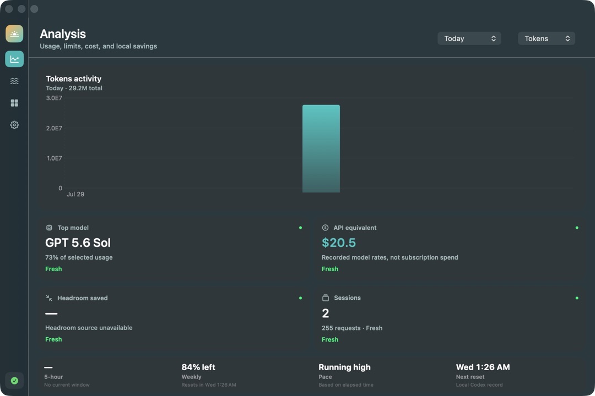
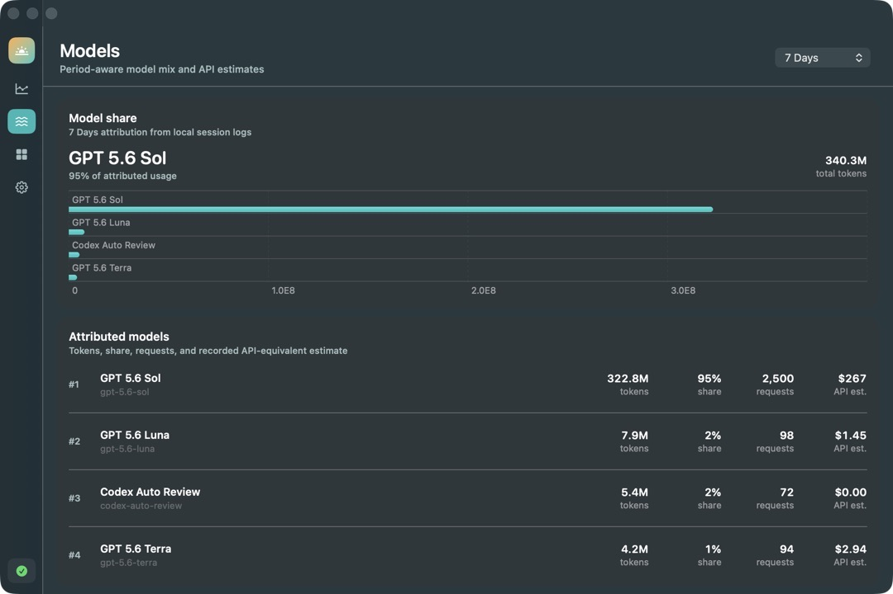

Version 2.0.6 · macOS 14+
Know exactly what
Codex is doing.
Usage, limits, models, and cost estimates—read locally from your Mac and kept visible with native desktop widgets.
Apple silicon + Intel No account No analytics

A clearer local record
Everything useful.
Nothing sent away.
Codex Usage turns local session history into a calm, period-aware view of what you used, which models handled it, and where your limits stand.
Model attribution
See the work behind the total.
Ranked model share, request counts, and recorded API-equivalent estimates make every period easy to understand.
- 01 Period-aware model mix
- 02 Recorded pricing estimates
- 03 Local session attribution

Private by architecture
Local means local.
Codex Usage reads session logs on your Mac, builds its snapshot on-device, and gives WidgetKit only the data it needs. Prompts and usage history never leave your computer.
Read the privacy policy- Accounts
- None
- Analytics
- None
- Cloud sync
- None
Codex Usage Monitor 2.0.6
Keep your Codex work in view.
Download for MacApple Development-signed preview. Not yet notarized; macOS may require Control-click, then Open.